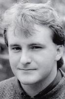

Celtic Lyrics Corner > Artists & Groups > Arthur Cormack
|  | Arthur Cormack |
| Albums : |
1989 -
Ruith Na Gaoith
1992 - Nuair Bha Mi Òg |
| Also on : |
Member of
Cliar
and
Mac-talla
Seinn! O Ho Ro Seinn! with Fiona Mackenzie |